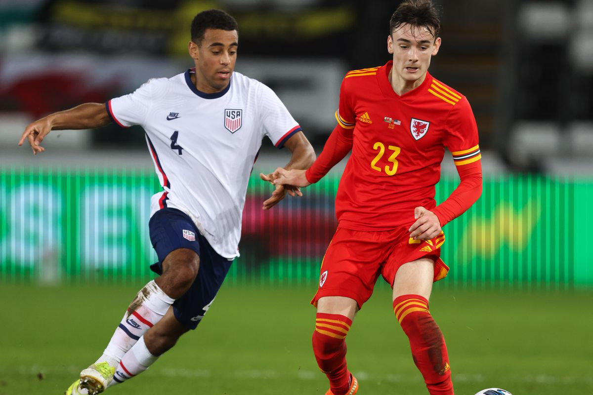

-
USA Shows Promise In 0-0 Draw With Wales
by Mitchel Green - November 12, 2020
|
mitchgr@umich.edu

Final Score: Wales 0-0 USA
For the first time in 285 days, the US National Team has played a game. Though this was not the complete team - it was only European-based players and star Christian Pulisic was out injured - we did start to see what this team can become as they prepare for World Cup Qualifying in 2021. Sorry to any Welsh readers we may have, this one is all team USA. Here are five key takeaways:
1. Buildup = Good; Chance Creation = Bad
Watching the US play, I was reminded a lot of Mikel Arteta’s Arsenal. Like Arsenal, the US’s buildup play from the backline was smooth, quick, and did well to progress against a team that really did not pressure them too often. Tyler Adams did well to keep the ball moving, the fullbacks did a great job pushing up to support attacks from wide, and John Brooks looked cool and collected on the ball. McKennie and Musah also did a good job progressing the ball through the middle with their passing and driving runs. Unfortunately, much like Arsenal, the US failed to create much in the way of chances. Because Wales sat deep to defend once in their own half, the US was forced to play the ball wide and cross in to create their opportunities. While there was some solid combination play on either side - particularly, the right side with Dest - the lack of a true striker really hurt the team’s chances of scoring. Sebastian Lletget performed fine in that position, but the role he took up was not conducive to helping the US find a breakthrough. Perhaps this can change when a striker like Josh Sargent or Jozy Altidore can be with the team, but for now, the US may have an issue in the final third.
2. Defensively Solid, Even If They Weren’t Defending Much
The US defense was hardly put under pressure by Wales, but when they were they performed well. Most opposition chances came from quick counterattacks in which the fullbacks were caught high up the field, but John Brooks and Matt Miazga did well defending one-on-one when covering the wide areas. McKennie was also a bright spot, covering the left-hand side almost every time Antonee Robinson was caught out. Zack Steffen, despite the lack of minutes at Manchester City, looked sharp when called upon as well - a nice save against Dan James his highlight of the night. The high press also showed promise early, as the frontline showed a lot of energy and intensity in their pressing. It created a couple of opportunities early, although they eventually came to nothing. It wasn’t a terribly difficult night defensively for the US as they were in control for most of the game, but this is what they are going to be like against most of CONCACAF. It’s nice to know that they are comfortable playing in that way.
3. Weston McKennie Can Do Everything
I don’t know how much playing under Pirlo has influenced this, but against Wales, Weston McKennie looked like the most confident player in the world. He fulfilled a bit of a do-everything role - finding himself in positions all over the field from leftback to right-wing - and he performed well on offense and defense. His defensive work and his drives from midfield were present as always, but what really stood out to me was his passing. I haven’t had the chance to watch much Juventus this year, but he was playing some passes (accurately I might add) that I have never seen from him before. Spraying long-range passes to the attacking fullbacks created opportunities throughout the night and - although they weren’t of quite the same quality - were very Pirlo-esque. Whether or not you were a fan of McKennie’s move to Juventus, I think it is clear to see no matter what happens this season he has benefited from learning from one of the greatest midfield passers of all time.
4. Gio Reyna Struggles To Adapt To National Team Role
I imagine his role would have been different if Christian Pulisic had been playing, but against Wales, Reyna was forced to be the team’s chief creator and one of their main goal threats. Judging by his performance, I’d say he’s not quite comfortable in this role (at least not yet). This should be no surprise given how he plays at Dortmund. With his club team, Reyna mainly as a facilitator for Dortmund’s other attacking talents (mainly Erling Haaland) to work their magic. He mainly does this through his movement and not with his relatively conservative passing. However, the US relied heavily on him to get the ball and create for himself and others through his passing. That just did not work for Reyna against Wales’s tough deep block. When he does pull of a risky pass with Dortmund, Reyna usually only does so when he has ample space. Against Wales, he was not given that, and his inability to create really hurt the US in the final third. Perhaps he will have more of a similar role to what he has at Dortmund when Pulisic comes back, but regardless more creative passing is something Reyna will need to develop as he continues to grow as a player.
5. Yunus Musah: The Last Piece Of The Midfield Puzzle
In Gregg Berhalter’s system, it is critical that the US maintains control of the midfield in order to play their possession-based game. In Yunus Musah, it seems they may now have the perfect balance in their midfield to succeed at this. In Tyler Adams, the US has a positionally intelligent player who can cover the centerbacks and keep the ball moving in possession. In Weston McKennie, well you can read the third takeaway. The US has never quite found the third midfielder to complement these two young stars, but they may have found the answer in Yunus Musah. From what I saw tonight, it seems Musah brings both quality in possession and risk-taking - something the likes of Bradley and Roldan never quite brought. His play was similar to what we saw from Christian Pulisic in the 2019 Gold Cup when Pulisic dropped into midfield and fulfilled a similar role. Now, obviously, he is not at Pulisic’s level, but Musah’s movement, link-up play, and driving runs were all what we saw out of Pulisic when he led the team to that Gold Cup final. And this opens up a lot of options for the team’s offense as Pulisic can now play in his preferred left-side wide forward role while not having to drop back and drive the ball forward himself. Even if Musah turns out to be a dud, a player in the mold is clearly what works best for Berhalter’s midfield.